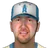
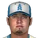
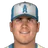
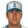
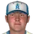

American Baseball League · Depth chart & lineups
Anaheim Angels
← Team page · Payroll · Transactions
Based on games played and started through May 13, 2002. The OOTP export has no saved depth chart or lineup card, so this is derived from real usage. Lineups and depth chart list only players on the active roster now (26 players).
Most common lineups
For each batting-order spot, the active player who started there most often against that kind of starter (each player used once). Starts in spot = games he started in that spot out of the games against that hand. AVG/OBP/SLG: his season line with this club.
vs. right-handed starters 34 games
| # | Player | Pos | Starts in spot | AVG | OBP | SLG |
|---|---|---|---|---|---|---|
| 1 | CF | 32 of 34 | .352 | .409 | .515 | |
| 2 | LF | 29 of 34 | .386 | .416 | .570 | |
| 3 | RF | 22 of 34 | .327 | .388 | .566 | |
| 4 | 2B | 21 of 34 | .353 | .399 | .590 | |
| 5 | C | 14 of 34 | .328 | .389 | .420 | |
| 6 | Rich Becker | DH | 16 of 34 | .248 | .329 | .328 |
| 7 |  Jason Lane | 1B | 11 of 34 | .255 | .321 | .428 |
| 8 |  Cliff Brumbaugh | 3B | 19 of 34 | .240 | .324 | .395 |
| 9 | J.J. Hardy | SS | 31 of 34 | .287 | .336 | .450 |
vs. left-handed starters 6 games
| # | Player | Pos | Starts in spot | AVG | OBP | SLG |
|---|---|---|---|---|---|---|
| 1 | CF | 5 of 6 | .352 | .409 | .515 | |
| 2 | 2B | 4 of 6 | .353 | .399 | .590 | |
| 3 | C | 6 of 6 | .328 | .389 | .420 | |
| 4 | RF | 5 of 6 | .327 | .388 | .566 | |
| 5 | LF | 3 of 6 | .386 | .416 | .570 | |
| 6 | Rich Becker | DH | 3 of 6 | .248 | .329 | .328 |
| 7 | Jason Lane | 1B | 2 of 6 | .255 | .321 | .428 |
| 8 | Cliff Brumbaugh | 3B | 5 of 6 | .240 | .324 | .395 |
| 9 | J.J. Hardy | SS | 6 of 6 | .287 | .336 | .450 |
Depth chart games started by position through May 13
| Pos | Role | Player | GS at pos | G | AVG | OBP | SLG | HR |
|---|---|---|---|---|---|---|---|---|
| C | Starter | 32 | 33 | .328 | .389 | .420 | 2 | |
| Backup 1 | Jason Phillips | 7 | 14 | .356 | .431 | .489 | 1 | |
| 1B | Starter | Jason Lane | 32 | 37 | .255 | .321 | .428 | 5 |
| Backup 1 | 4 | 14 | .294 | .400 | .441 | 1 | ||
| Backup 2 | Jason Phillips | 4 | 14 | .356 | .431 | .489 | 1 | |
| Backup 3 | Darnell McDonald | 0 | 5 | .667 | .667 | 1.667 | 1 | |
| 2B | Starter | 33 | 38 | .353 | .399 | .590 | 9 | |
| Backup 1 | 7 | 14 | .231 | .323 | .346 | 1 | ||
| 3B | Starter | Cliff Brumbaugh | 37 | 37 | .240 | .324 | .395 | 6 |
| Backup 1 | Freddy Sanchez | 3 | 10 | .400 | .455 | .650 | 1 | |
| SS | Starter | J.J. Hardy | 37 | 37 | .287 | .336 | .450 | 4 |
| Backup 1 | 3 | 38 | .353 | .399 | .590 | 9 | ||
| Backup 2 | 0 | 14 | .231 | .323 | .346 | 1 | ||
| LF | Starter | 35 | 37 | .386 | .416 | .570 | 5 | |
| Backup 1 | 3 | 14 | .294 | .400 | .441 | 1 | ||
| Backup 2 | 2 | 38 | .327 | .388 | .566 | 7 | ||
| Backup 3 | 0 | 14 | .231 | .323 | .346 | 1 | ||
| CF | Starter | 37 | 39 | .352 | .409 | .515 | 1 | |
| Backup 1 | Rich Becker | 2 | 35 | .248 | .329 | .328 | 1 | |
| Backup 2 | 1 | 37 | .386 | .416 | .570 | 5 | ||
| Backup 3 | Darnell McDonald | 0 | 5 | .667 | .667 | 1.667 | 1 | |
| RF | Starter | 35 | 38 | .327 | .388 | .566 | 7 | |
| Backup 1 | Rich Becker | 5 | 35 | .248 | .329 | .328 | 1 | |
| DH | Starter | Rich Becker | 24 | 35 | .248 | .329 | .328 | 1 |
| Backup 1 | Jason Lane | 5 | 37 | .255 | .321 | .428 | 5 | |
| Backup 2 | 2 | 14 | .294 | .400 | .441 | 1 | ||
| Backup 3 | Freddy Sanchez | 1 | 10 | .400 | .455 | .650 | 1 |
Rotation OOTP projected starters (projected_starting_pitchers.csv)
| # | Pitcher | Active | GS | W-L | IP | ERA | WHIP | K |
|---|---|---|---|---|---|---|---|---|
| 1 | Yes | 8 | 0-2 | 45.2 | 5.12 | 1.69 | 45 | |
| 2 | Heath Murray | Yes | 8 | 4-3 | 46.0 | 4.50 | 1.72 | 38 |
| 3 |  Brandon Claussen | Yes | 7 | 2-2 | 42.2 | 4.43 | 1.45 | 23 |
| 4 |  Seth Greisinger | Yes | 8 | 3-2 | 44.2 | 5.64 | 1.59 | 22 |
| 5 | Yes | 9 | 5-2 | 52.1 | 4.13 | 1.59 | 43 |
Bullpen roles from usage: closer = most saves, setup = most holds, long relief = most innings per outing (1.1+ IP)
| Role | Pitcher | Throws | G | SV | HLD | IP | IP/G | ERA | K |
|---|---|---|---|---|---|---|---|---|---|
| Closer | RHP | 14 | 9 | 0 | 16.0 | 1.1 | 2.25 | 10 | |
| Setup | Matt Mantei | RHP | 14 | 1 | 1 | 16.0 | 1.1 | 4.50 | 22 |
| Setup | Kevin Tolar | LHP | 10 | 0 | 3 | 13.1 | 1.3 | 8.10 | 12 |
| Long relief | Luis Ayala | RHP | 13 | 0 | 0 | 24.2 | 1.9 | 2.92 | 22 |
| Long relief | Willis Roberts | RHP | 11 | 2 | 0 | 26.0 | 2.4 | 4.85 | 13 |
| Middle relief |  Josh Hancock | RHP | 10 | 0 | 1 | 15.1 | 1.5 | 9.39 | 11 |
| Middle relief | RHP | 9 | 0 | 0 | 15.2 | 1.7 | 1.15 | 9 |
Bench active position players outside the regular lineups
| Player | Pos | G | PA | AVG | OBP | SLG |
|---|---|---|---|---|---|---|
| Jason Phillips | C | 14 | 51 | .356 | .431 | .489 |
| 1B | 14 | 40 | .294 | .400 | .441 | |
| 2B | 14 | 31 | .231 | .323 | .346 | |
| Freddy Sanchez | 2B | 10 | 22 | .400 | .455 | .650 |
| Darnell McDonald | CF | 5 | 3 | .667 | .667 | 1.667 |
Injured list
Nobody on the injured list.